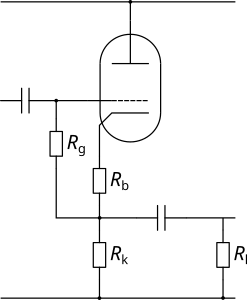

| Circuit Parameter | Operating Point | ||
|---|---|---|---|
| Field 1 | Value 1 | ||
| Field 2 | Value 2 | ||
| Field 3 | Value 3 | ||
| Field 4 | Value 4 | ||
| Field 5 | Value 5 | ||
| Field 6 | Value 6 | ||
| Field 7 | Value 7 | ||
| Field 8 | Value 8 | ||
The AC Cathode Follower, like all followers provides no gain (it actually introduces a very slight loss) but operates as a buffer that isolates a high impedance source from a low impedance drive. Because of the AC coupling on both the input and the output, the bias point is not affected by input DC voltage or output load but the AC load seen by the cathode is the cathode resistor in parallel with the load impedance. This means that the AC load line is rotated about the bias point and it is important understand the effect this has on output swing if the follower will be driving a heavy load. Remember that the grid to cathode voltage is not the input signal and it is the maximum swing (the input and output are the same) that is determined by the limits of the load line before the grid to cathode voltage becomes positive or the valve is cut off.
The load line is drawn in exactly the same way as for the Triode Common Cathode Amplifier as the voltage from anode to cathode is simply determined by the current flowing through the triode and the total resistance in the anode to cathode path. This means that the DC voltage on the cathode is actually the supply voltage minus the voltage across the triode. Remember to check whether heater elevation will be required to keep the valve within maximum ratings.
Note that the input of the AC Cathode Follower is bootstrapped because the AC voltage on either end of the grid resistor is essentially identical - this means that practically no signal current flows in the grid resistor and so the input impedance is much higher than the value of the grid resistor. In turn, this means that the input capacitor can be quite small without there being any effect on low frequencies.